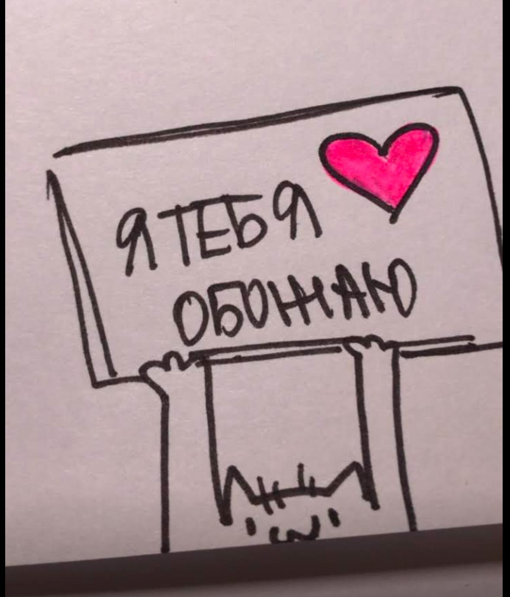
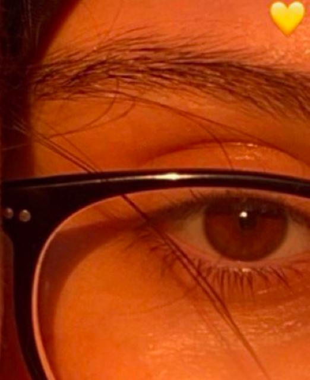
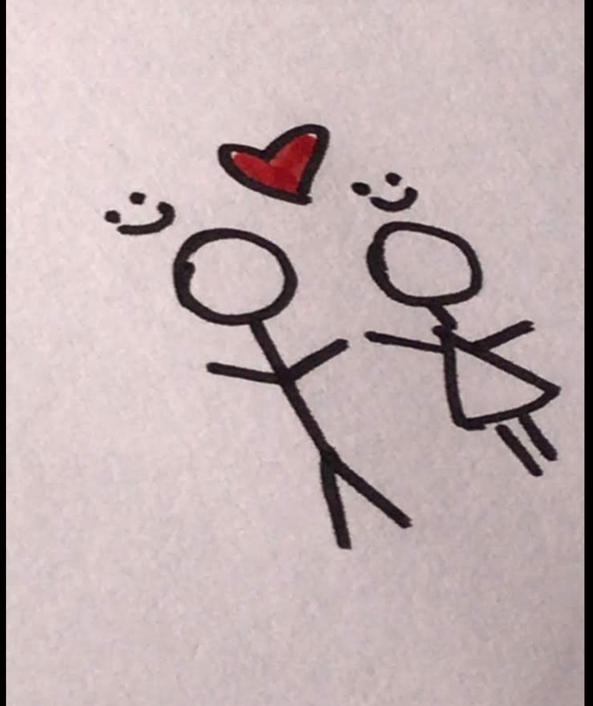
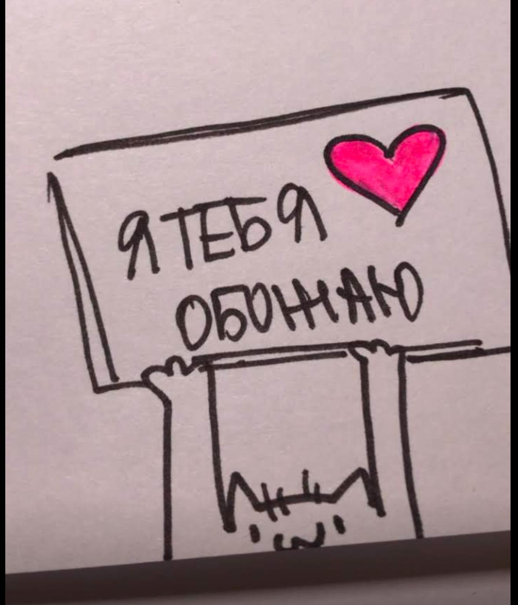
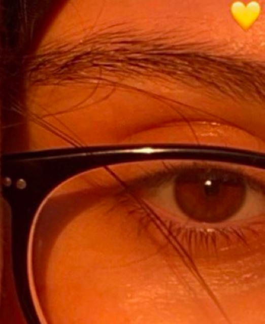
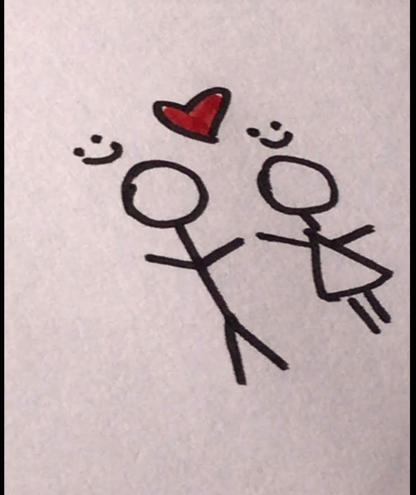
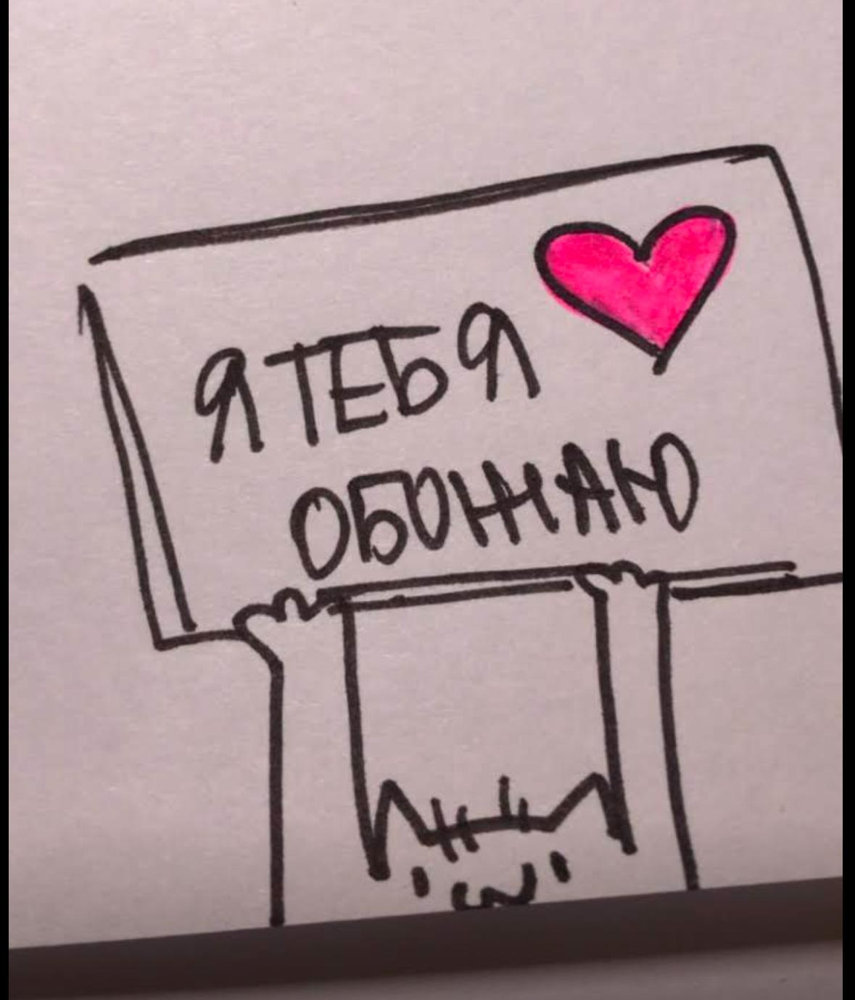
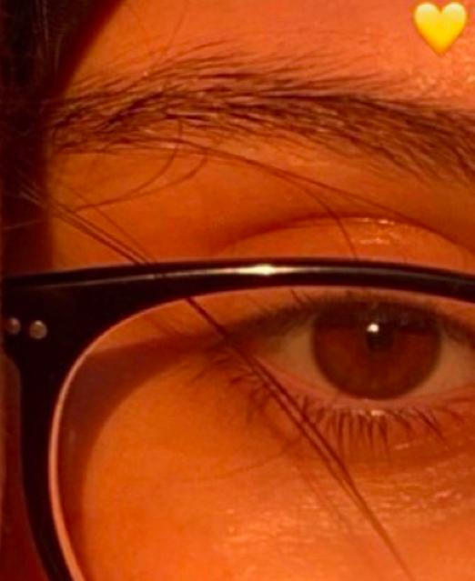
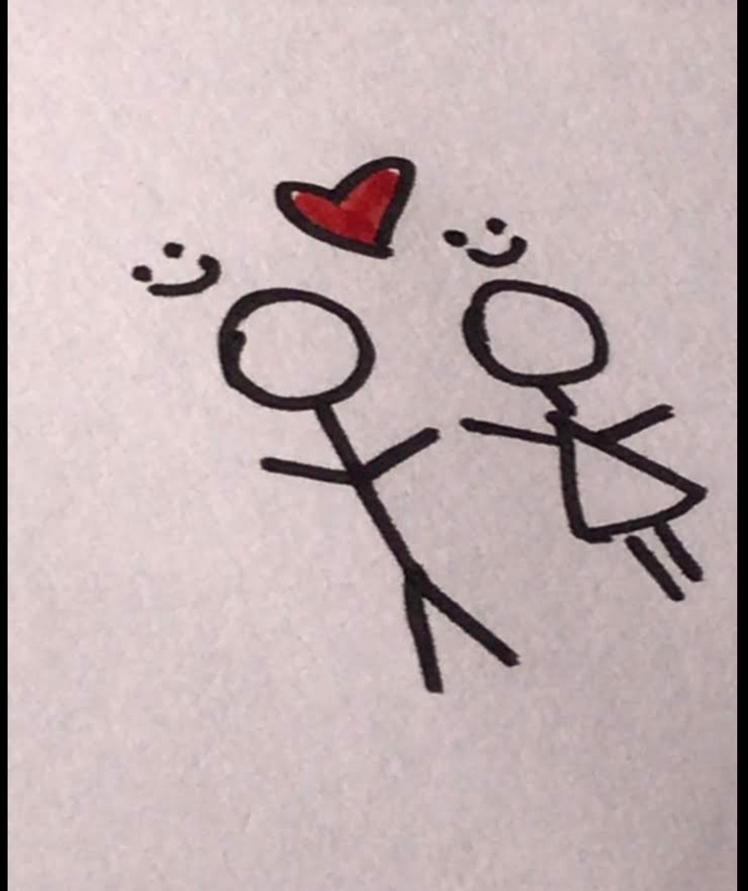

Твоя улыбка это что-то невероятное, теплое и очень милое (улыбайся почаще)
С тобой всё становится особенным, простые разговоры превращаются в самые важные слова, а обычные дни в лучшие воспоминания. Ты делаешь мир вокруг светлее, наполняешь его теплом, и я не устану повторять, как сильно я тебя люблю
В ее карих глазах столько глубины, что я хочу потеряться в них и не захотеть находиться.
Она тот человек, который делает все вокруг особенным. С ней даже самые обычные моменты становятся незабываемыми, а мир кажется лучше и добрее.
Я счастлив, что знаю ее, что могу любить ее. Она мое вдохновение, моя нежность, мое все.
Я понял что настоящая любовь это не только быть рядом, показывать насколько она сильна, но и уметь отпускать. Если так будет лучше для тебя. Если свобода сделает тебя счастливее, значит, так правильно. Спасибо Хади..


